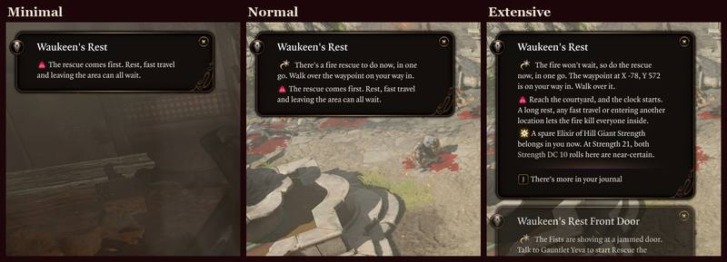
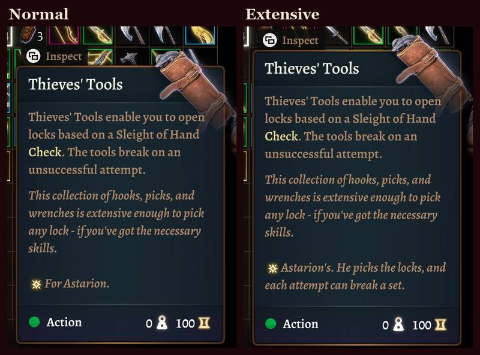
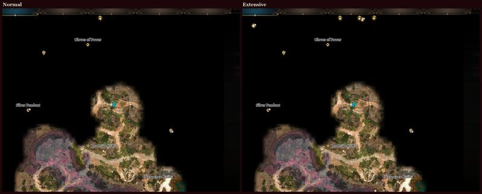
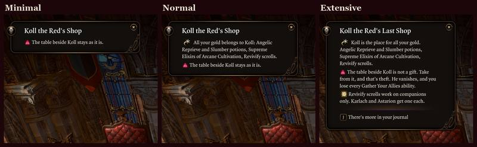
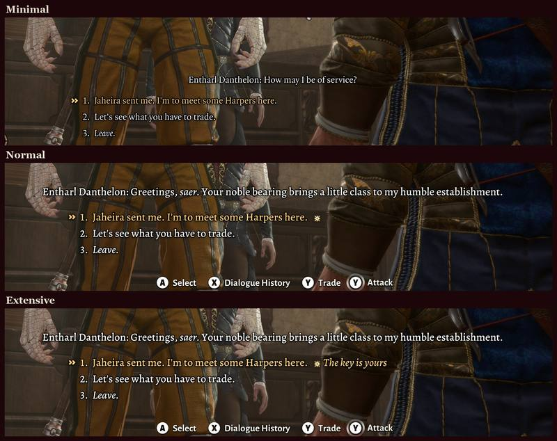
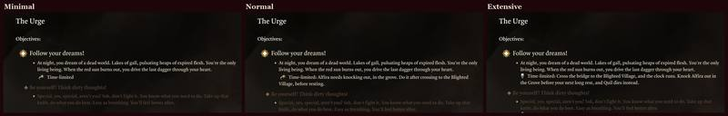

The three tiers
You choose when you install. The words are bound into the game's language file, so changing your mind means rebuilding the mod with the game closed. Your saves survive it.
| What you get | Minimal | Normal | Extensive |
|---|---|---|---|
| The idea | Never lose a thing by accident | Steered, not spoiled | The full walkthrough |
| Notes on the ground | 151Only what could slip away | 1,144What to do, and what could slip away | 1,144Also rolls, party advice, loot and tips |
| Dialogue tags | None | 1,497A mark. No words. | 1,497A mark, and what follows your click |
| Quest lines | 215How urgent. Nothing more. | 831A short nudge | 833Full advice, deadlines named |
| Item tooltips | None | 257Who it suits | 311Who it suits, and why |
| Map pins | None | 212Loot and secrets | 366Story steps as well |
| Treasure glints | None | 107 | 107 |
| Points of no return | 7Names your open quests | 7Names your open quests | 7Says what you stand to lose |
| Camp warnings | 16No outcome given | 16No outcome given | 16Says what will happen |
| Walkthrough text in the journal | None | None | Yes |
Which one to pick
Normal suits a first run. It tells you where to go and warns you of what could be lost. It never says why. In conversation you see a star or a red mark, and what the line leads to is yours to find out.
Minimal is for those who fear one thing: missing something for good. Most days, you won't know it's there.
Extensive is for a second run, or for those who want the numbers. It tells you everything about the place you stand in. Expect spoilers.
Even Extensive holds its tongue
A dialogue tag only says what happens right after you click. If the price comes due much later, it says 'Costs you later' or 'Pays off later', and nothing else. 145 lines keep their secrets this way.
The same spot at each tier





Hidden: Act 3 side questShow screenshot

Hidden: Act 3 conversationShow screenshot

Hidden: early Dark Urge storyShow screenshot
